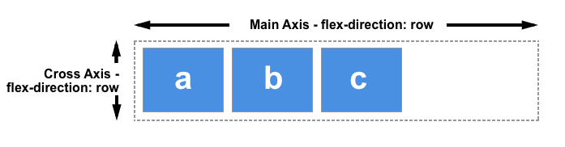
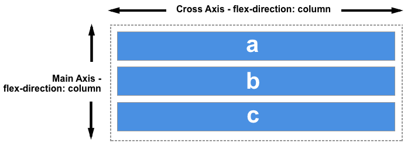

The reason justify-content and align-items behave differently when the value of flex-direction is row or column is that the flexbox container is designed to have a main axis and a cross axis. The flex-direction property defines the main axis, and the cross axis runs perpendicular to it.
Everything on flexbox refers to these axes, so it is worth understanding how they work.
When the value of flex-direction is row, the main axis runs from left to right (for most languages) and the cross axis from top to bottom:
When the value of flex-direction is column, the main axis runs from top to bottom and the cross axis from left to right (again, language dependant):
So, the two properties we've already covered act on:
Images from MDN Web Docs - Basic concepts of flexbox